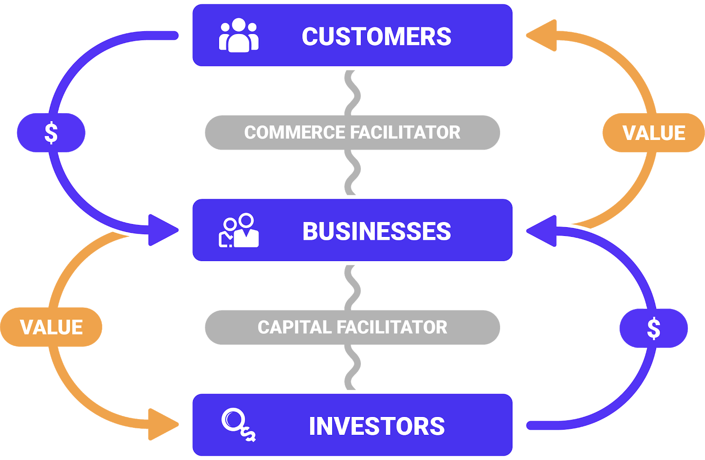

CapFac
Now that we our universe full of citizens and their businesses are thriving and co-creating value for themselves and others, how can they finance their growth? How to find capital?
Capital Facilitator
So just as a ComFac is to commerce, and a BankFac is to banking, a CapFac helps facilitate capital for at least two sides: businesses that need money, and investors with money who want to make more by financing growing businesses.

Banks
Banks can loan money and offer credit to consumers and commercial credit to businesses. They perform the function of CapFac in this mode. Often, loans are secured by inventory or cash flows or other forms of assets.
VC
Venture financing is another type of financing but for deals involving much higher risk but also much higher potential reward. In this way, VCs act as CapFac services.
Community
A business is a community of employees, vendors, partners, customers, and everyone in the middle and around. And these are great sources of capital, particularly in this new age of crowdfunding. In this way, a brand may leverage it's own network for investment capital, allowing the community to act as the CapFac.
Data
While we have focused on the actor that actuates the capital, all of them use data to decide whether or not and how much to invest into any given opportunity. This data and the associated intelligence is what drives any CapFac, and in that sense, data is not just money, but also the CapFac.
Wall Street
And who is better than using data to arbitrage any opportunity to make money? Data is the new oil, and Wall Street is the Great Oil Rig. And despite this extractive approach, pardon the pun, they do act as a CapFac. And in the next section, we'll examine the exchange.